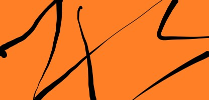

Voorste kruisband (VKB)
Pathologie
Word vaak acuut gescheurd of overrekt bij een abrupte draaiing met gefixeerde voet, zoals bij voetbal of skiën. Bij jonge, actieve patiënten wordt vaak een reconstructie overwogen.
Symptomen
- Traumamoment (exo, valgus, of hyperextensie)
- Knappend geluid
- Instabiliteit
- Haematros (zwelling 1-2 uur na trauma)
Testen VKB
Uitgangshouding
De patiënt ligt in ruglig of zit halfopgericht tegen de klep van een behandeltafel, met de heup in een hoek van minder dan 90° gebogen. De knie wordt in 20-30° flexie gehouden.

Uitvoering
De fysiotherapeut plaatst één hand om het bovenbeen van de patiënt, terwijl de andere hand het proximale deel van de tibia van achteren omvat. Vervolgens trekt de therapeut het onderbeen in ventrale richting. Het is belangrijk om te zorgen voor een manipulatieve beweging om het eindgevoel goed te kunnen testen. Bij een langzaam uitgevoerde beweging is de kans op het ervaren van een hard eindgevoel kleiner.
- Eindgevoel en beweeglijkheid van de tibia ten opzichte van het femur worden geobserveerd.
Positieve test
- Voorwaartse verschuiving van de tibia ten opzichte van het femur
- Verlies van eindgevoel
Sensitiviteit
0.76Specificiteit
0.90Filmpje
Uitgangshouding
De patiënt ligt in ruglig met het aangedane been in flexie, de voet plat op de behandeltafel. De therapeut zit aan de voetzijde van het onderzoekspatient en plaatst de duimen op de tuberositas tibiae.

Uitvoering
De therapeut trekt de tibia naar zich toe, waarbij de nadruk ligt op de voorwaartse beweging van het onderbeen ten opzichte van het bovenbeen. Dit wordt zorgvuldig uitgevoerd om het schuiflade-effect te beoordelen.
- Tibia naar je toe trekken met de duimen op de tuberositas tibiae.
Positieve test
- Voorwaartse verplaatsing van de tibia t.o.v. het femur.
- Verminderde eindfeel bij het trekken aan de tibia.
Sensitiviteit
0.70Specifiteit
0.85Filmpje
Uitgangshouding
De patiënt ligt in ruglig op de onderzoeksbank met het been volledig in extensie. De therapeut pakt de voet en de buitenkant van de knie vast.
Uitvoering
De fysiotherapeut drukt de knie naar binnen en maakt vervolgens flexie in de knie. Hierbij wordt gelet op de beweging van de tibia ten opzichte van het femur en eventuele instabiliteit die optreedt.
- Knie naar binnen drukken gevolgd door flexie van de knie.
Positieve test
- Bewegingsbeperking of plotselinge instabiliteit van de knie.
- Pijn of ongemak tijdens de test.